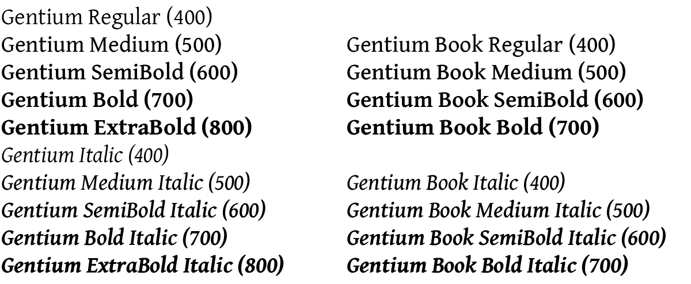
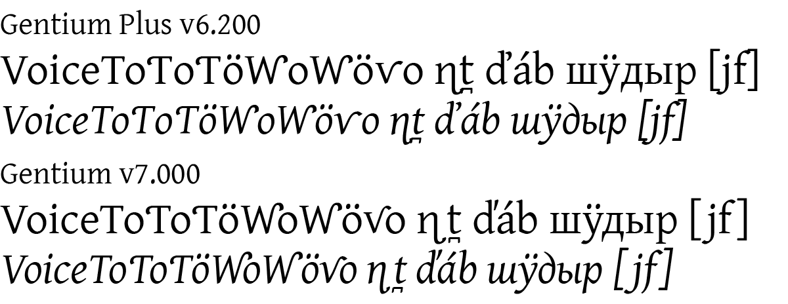
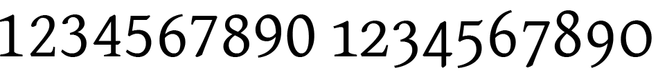
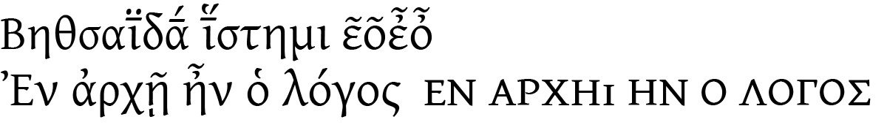
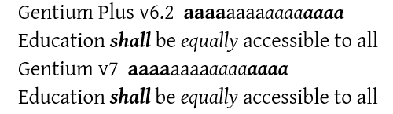

Gentium - Version 7 Changes
New major release
Gentium version 7 is a major release with many new additions, enhancements, and improvements. This is a summary of the most notable changes and what you need to know if you have been using earlier versions. Please read this carefully to understand the major changes. For further details on these changes, particularly regarding individual characters, see Version history.
Family names and structure
Font family names have changed
Since the changes to both line metrics and spacing are so extensive we have changed the names of the fonts for version 7.
- Gentium Plus is now Gentium
- Gentium Book Plus is now Gentium Book
This enables you to keep the old v6.2 fonts installed when you install the new v7 ones. Projects and documents can then be gradually changed to use the new v7. We do recommend that you start using v7 right away and phase out your use of v6.2 as soon as possible.
Revised family groups with additional weights
Both Gentium and Gentium Book families now have additional intermediate weights, with the previous Book family weights integrated into the main Gentium family. Previously existing weights in both families have not changed. The CSS values for the weights within each family are in parentheses. Italic faces follow a similar structure and correspondence.

All the previous Book weights are present in the main Gentium family, so for many users the Book family is no longer needed. The main reason to use the Book family is if you prefer Gentium Book Regular as a primary text face and want to retain automatic style linking with Gentium Book Bold.
The new intermediate weights in these extended, axis-based families can be confusing for applications that still assume families should have only four members (Regular, Italic, Bold, Bold Italic). This is the case for Microsoft Word and some older Windows applications. For details on how to use the intermediate weights in these applications, see Using Axis-Based Font Families.
Gentium Book is now a separate download and is no longer included in the main Gentium package.
Decreased default line spacing - and no Compact versions
The default line spacing of Gentium has been significantly decreased. In the past, line spacing had to be extreme to avoid clipping of tall letters and high diacritics on Windows. This is no longer a problem, so we’ve been able to reduce the default line spacing to be more similar to other common text fonts. We continue to recommend that you set line spacing explicitly in your document styles and preferences, and adjust it as needed for your particular situation.
The v7 fonts do not have Compact variants. The new default line spacing is closer to the previous version’s Compact line spacing. If you still need even closer line spacing, and your application does not allow explicit control over line spacing, you can continue to use the v6.2 Gentium Plus Compact fonts, which remain available. If you need any of the new v7 features or characters, but also need them supported in a compact version please contact us.
TypeTuner Web no longer offers line spacing alternatives for the v7 fonts (Normal, Tight, Loose). If you need Tight or Loose variants the v6.2 fonts remain available and support line spacing alternatives.
Special-purpose modified variants have not been updated to v7
In previous versions, special-purpose modified font variants were available that had been ‘pre-tuned’ to turn on certain features by default for some regional and Literacy uses. These are not available for the v7 fonts, however, the v6.2 special-purpose fonts are still available. If you need any of the new features or characters in this version, but also need them supported in the special-purpose modified fonts please contact us.
Note that even in version 7 the literacy forms and other features can be manually preset with TypeTuner Web. The only change to this is that the 'pre-tuned' versions (only) remain at version 6.2.
New features and character support
Greatly enhanced kerning
Kerning has now been expanded to cover the full range of alphabetic symbols except for small caps (which will be included in a future update). To make this practically useful for a wide range of languages the letters have been clustered into overly generalized groups. This enables the kerning to apply to more combinations, but does not allow for careful fine-tuning. The expanded kerning may not be ideal in all cases, and may still require manual adjustment, but it should provide improved spacing compared with previous versions. It is very possible that we have made some mistakes in this massive kerning effort, so please contact us if you encounter any combinations whose spacing has been made worse than in v6.2.
Warning: Because of the addition of extensive kerning, line, paragraph, and page lengths may be different from v6.2.

Proportional Oldstyle figures
Gentium now includes support for standard OpenType proportional
oldstyle figures (onum). These only apply to the main
numerals, not fractions, superscripts, or numeral-based symbols.

Greek improvements
Greek OpenType support is significantly more robust, with better
handling of both combining and non-combining diacritics. Macron +
diacritic combinations are now supported, as well as some rare
epsilon and omicron diacritic combinations. Small caps (both
smcp and c2sc) are supported, with
diacritics bring removed.

Capital N Left Hook default changed to lowercase style
The default form for capital N with left hook has been changed to
the lowercase style to match the capital Eng. The related feature
(cv44) has been changed to substitute the uppercase
style form. See the Feature list.
Additional character support including Unicode 16
Support has been added for 29 additional characters, some of which were introduced in Unicode 16. For a full list see Version history.
Consistent autohinting
Autohinting has been improved to be more consistent across the whole family.

Upright and italic faces appear more consistent in height in smaller sizes (Windows 11, Word, 9 pt, 150%, enlarged)
General improvements
Other improvements have been made to over 150 glyphs, OpenType code, and other font aspects, including:
- Letters with upper-right hooks have been redesigned to improve spacing (including kerning) and reduce collisions. Some collisions have been retained to reduce unwanted whitespace within words (e.g. ƴk).
- Central European carons have improved designs and kerning.
- Bridging diacritics handle many more possible combinations. See Using Bridging Diacritics for details on how these need to be encoded and ordered.
- Low-profile diacritics are used for capitals for Cyrillic as well as Latin.
- Small caps apply to bracketing punctuation.
For more details see Version history.
If you have any difficulty with these changes, or have other suggestions on how we can make the fonts better, please contact us.